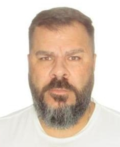

A Faculdade Unicesumar, situada em Vitória da Conquista – BA, certifica que:
CPF: ***012.***574.***40 RG: ***MG8***366***
Nascido em 30/11/1980 Natural de Belo Horizonte – MG
Filiação: Paulo Pinto de Oliveira e Ireniza Alves de Oliveira
Concluiu com êxito o Curso de Bacharelado em Administração, realizado no período de janeiro de 2021 a dezembro de 2025, cumprindo integralmente a carga horária e os requisitos acadêmicos exigidos pelo Ministério da Educação.
Vitória da Conquista, dezembro de 2025.

__________________________
Lucas Andrade
Diretor Acadêmico
__________________________
Maria Fernanda Costa
Coordenadora do Curso